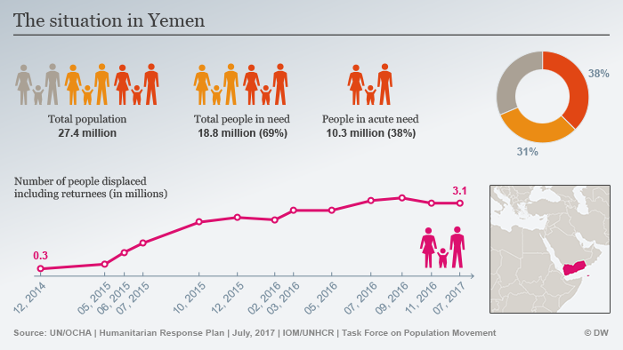
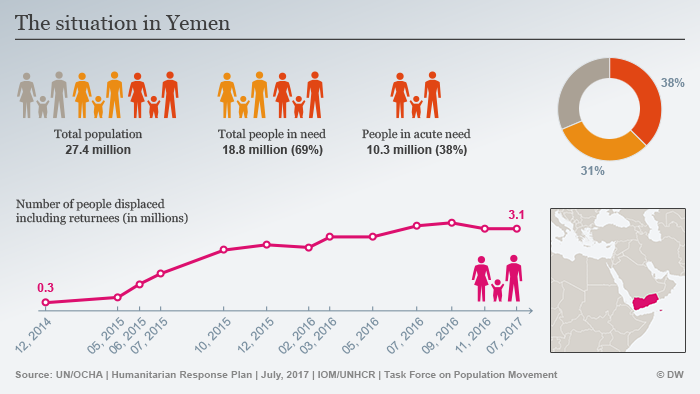

The entire point of this website is to raise awareness and spread the word about struggling people and areas around the world. From the graphs and figures from the website, I think it is very clear that where we live right now, Canada, is a very fortunate place and not every area around the world is as lucky as us. Places like Yemen and the Central African Republic are just two exmamples of many places that suffer from hunger. It is a bigger deal than you may think. There are still things you can do to help out the people in need. First, you can donate to food drives. Instead of throwing out the extra food and cans you have in your pantry, donate them to local food drives and shelters. Dont waste food. By not wasting food it is making sure that at least someone ate it and nothing is going to waste. Finally, don't buy so much more then you need. Let other people purchase food that need it more than you, and if they can't afford it, then help them out with a dollar or two.
 
